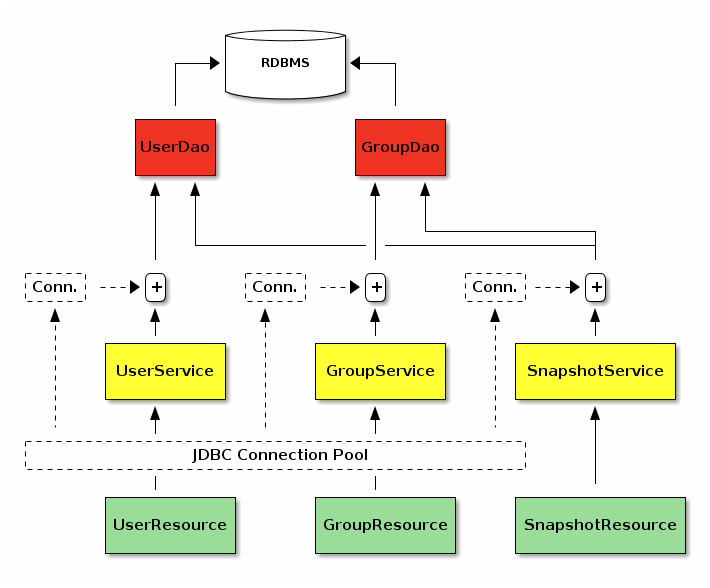
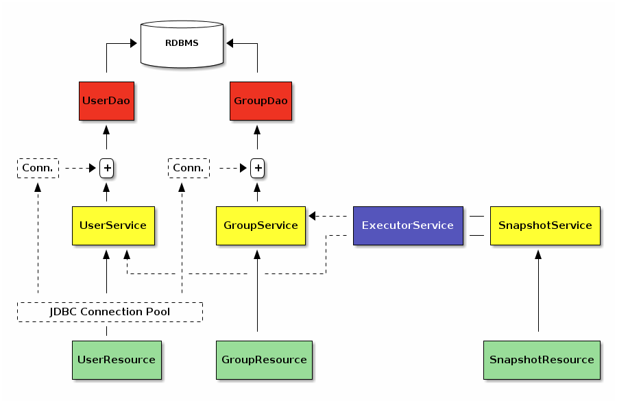

At bol.com, we have a microservice-based software ecosystem. Every functionally grown enough monolithic software is split into its own microservice, which exposes a simple REST interface to the outside world. Fine-grained functional scope of the services helps to keep the code base clean and lets programmers just to stick to the point. Which implicitly also results in a coding style such that the clean code has a higher priority over performance. Optimizations are introduced whenever they are necessary and after careful profiling. For the rest, KISS principle is applied.
For a particular microservice, we are given the task of returning a snapshot of the current state of the data model. In this post, I will use the following simple model to demonstrate the problem at hand and the solution I came up with.

In a nutshell, service basically encapsulates User and Group entities in
the database. While doing so, database records are first interfaced via a
DAO layer requiring a
database connection to operate.
trait UserDao {
def create(name: String, groupId: Int)(implicit connection: Connection): Unit
def findAll()(implicit connection: Connection): Seq[User]
}
trait GroupDao {
def create(name: String)
def findAll()(implicit connection: Connection): Seq[Group]
def findById(id: Int)(implicit connection: Connection): Option[Group]
}Next, DAO layers are interfaced by services such that they acquire a database connection from the JDBC pool and make relevant DAO calls.
trait UserService {
def create(name: String, groupId: Int): Unit
def findAll(): Seq[User]
}
@Component
class UserServiceImpl @Autowired()
(userDao: UserDao,
groupDao: GroupDao,
connectionPool: ConnectionPool)
extends UserService {
def create(name: String, groupId: Int): Unit =
connectionPool.acquire { implicit connection =>
require(groupDao.findById(groupId).isDefined, "non-existing group id")
userDao.create(user, groupId)
}
def findAll(): Seq[User] =
connectionPool.acquire { implicit connection =>
userDao.findAll()
}
}
// GroupService and GroupServiceImpl are implemented likewise...This also applies to SnapshotService, which accesses UserDao and
GroupDao using a single database connection.
trait SnapshotService {
def take(): Snapshot
}
@Component
class SnapshotServiceImpl @Autowired()
(userDao: UserDao,
groupDao: GroupDao,
connectionPool: ConnectionPool) {
def take(): Snapshot =
connectionPool.acquire { implicit connection =>
Snapshot.from(
users = userDao.findAll(),
groups = groupDao.findAll())
}
}While this approach totally makes sense, as the user and group collections
start to grow in size, calls to SnapshotService.take() started to take more
and more time.
Given the fact that constructing a snapshot is a read-only operation, I
anticipated querying UserDao.findAll() and GroupDao.findAll() in parallel
will buy us quite some SnapshotService.take() time. That being said, it is
crucial to note that querying DAOs via separate database connections in
parallel is going to violate the transactional safety, but in our case it has
a negligible margin of error for fetching collections in parallel.
I updated the existing SnapshotService to replace its UserDao and
GroupDao calls to UserService and GroupService instead (to provide each
DAO a dedicated connection) and perform these fetch operations in parallel
through an ExecutorService as follows:

I implemented ExecutorService using Scala’s Futures:
trait ExecutorService {
implicit val executionContext: ExecutionContext
val awaitDuration: Duration
def await[T](future: Future[T]): T
def awaitAll(futures: Future[_]*): Unit
def schedule[T](body: => T): Future[T]
def scheduleAll(bodies: (() => _)*): Future[Unit]
}
class ExecutorServiceImpl(awaitDurationSpec: String) extends ExecutorService {
requireNotNull("await duration specification" -> awaitDurationSpec)
override implicit val executionContext: ExecutionContext = ExecutionContext.Implicits.global
override val awaitDuration: Duration = Duration(awaitDurationSpec)
override def await[T](future: Future[T]): T = Await.result(future, awaitDuration)
override def awaitAll(futures: Future[_]*): Unit =
if (futures.nonEmpty)
await { futures.reduce { (prev, next) => prev.flatMap(_ => next) } }
override def schedule[T](body: => T): Future[T] = Future { body }
override def scheduleAll(bodies: (() => _)*): Future[Unit] =
if (bodies.isEmpty) Future.successful(())
else schedule { bodies.map(body => schedule { body() }).foreach(await) }
}And then employing ExecutorService in SnapshotService is a piece of cake:
@Component
class SnapshotServiceImpl @Autowired()
(userService: UserService,
groupService: GroupService,
executorService: ExecutorService) {
import executorService._
def take(): Snapshot = {
val usersFuture = schedule { userService.findAll() }
val groupsFuture = schedule { groupService.findAll() }
await {
for {
users <- usersFuture
groups <- groupsFuture
} yield Snapshot.from(users, groups)
}
}
}Scala Futures provide a powerful abstraction to run certain tasks in parallel using a thread pool in the back of the scenes. At the beginning I was afraid that it might necessitate too much boilerplate just to get a simple thing done, but luckily it turned out to be a quite easy task.
In this example, I needed to trade off the transactional consistency of fetched collections for the sake of increasing performance using multiple threads to query the database. While this implied a negligible error margin for the particular problem at hand here, it is not something desirable at every microservice. But that is the discussion of another blog post.